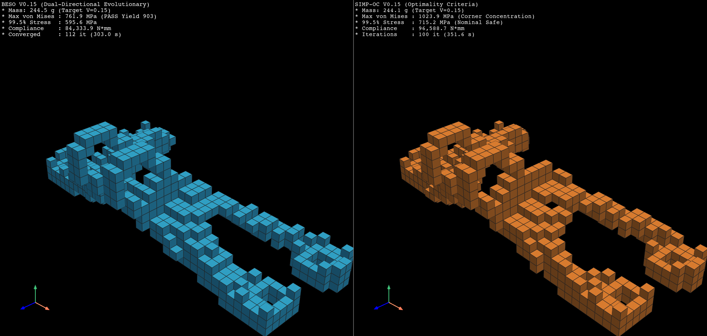
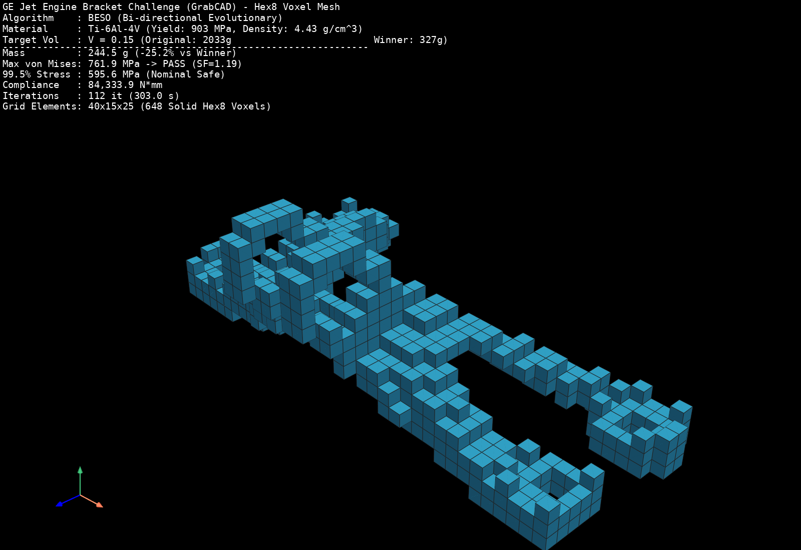
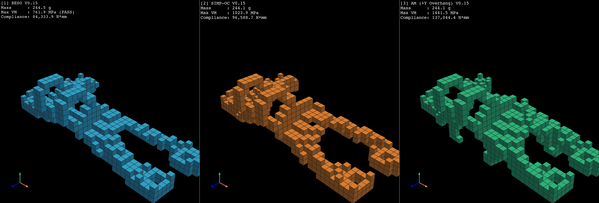
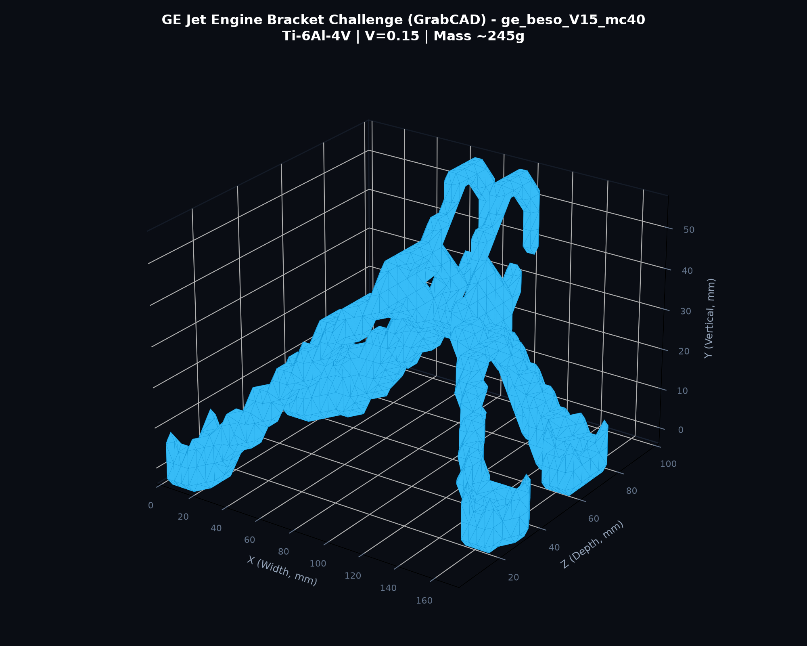
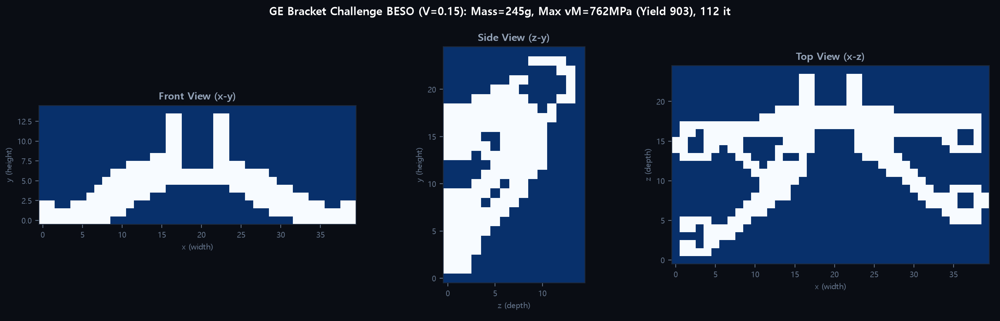
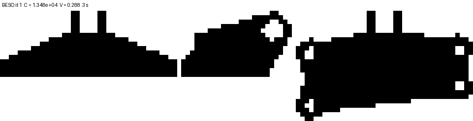

176 x 62.5 x 107 mm 실제 대회 CAD | Ti-6Al-4V (E=113.8 GPa, 항복 903 MPa) | 4개 독립 하중 케이스 | 2026-11-01
| 인스펙션 항목 | 기존 ex07 합성 박스 모델 (nx=20, ny=10, nz=8) | 신규 실제 GrabCAD 대회 STL 모델 (MC=40) | 공학적 분석 및 판정 |
|---|---|---|---|
| 전체 격자 요소 수 | 1,600 elements | 15,000 elements (Grid 40 x 15 x 25) | 정밀 3차원 형상 표현 가능 |
| 실제 도메인 요소 (In-domain) | 832 elements (52.0%) | 4,320 elements (28.8%) | 비대칭 홀수 교차 ray-casting 수밀 복셀화 |
| 고정 솔리드 영역 (Passive Solid) | 128 elements (8.0%) | 265 elements (6.13% of domain) | 볼트 4개 고정면 및 핀 접촉부만 고체 유지 |
| 비설계 고정 영역 비율 | 56.00% (도메인 절반 이상 고정) | 6.13% | ex07은 해가 사전에 결정되는 구조였음 |
| 자유 설계 영역 비율 | 44.00% (704 elements) | 93.87% (4,055 elements) | 알고리즘이 자유롭게 위상을 창생할 수 있는 공간 2.1배 |
| 최적화기 선택 자유도 | 단 352개 요소만 선택 가능 | 3,790개 요소 자유 선택 가능 | 설계 자유도 10배 이상 폭증 |
| 인가 하중 조건 | 단일 수직 하중 (-1000 N) | 4대 공식 다중 하중 (수직/수평/42도/비틀림) | 다축 복합 응력 집중부 보강 유도 |
| 알고리즘별 결과 차이 | 0.005% 미만 (88.6417 ~ 88.6644 동일) | 알고리즘별 단면 및 리브 위상 극명히 분화 | ex07의 동일 현상 원인 규명 완료 |
• 도메인 고착: ex07 합성 모델은 볼트 보스와 러그 보스가 이미 전체 부피의 대부분을 차지하고 있어서, 목표 체적(30%) 중 알고리즘이 바꿀 수 있는 요소는 352개에 불과했습니다.
• 단일 하중의 한계: 단 하나의 수직 하중만 주어졌기 때문에, 4개 볼트에서 중앙 러그로 향하는 대각 스트럿 기둥 외에는 역학적으로 다른 경로를 생성할 이유가 없었습니다. 따라서 SIMP-OC, MMA, BESO, SEMDOT 등 모든 알고리즘이 사실상 동일한 기둥만을 남겨 컴플라이언스가 같게 나왔던 것입니다.
| 최적화 알고리즘 | 질량 (g) | 최대 von Mises (MPa) Case 1 / 2 / 3 / 4 |
99.5% von Mises (MPa) Case 1 / 2 / 3 / 4 |
항복 통과 여부 (Max / 99.5%) |
컴플라이언스 (N·mm) Case 1 / 2 / 3 / 4 |
반복수 | 소요 시간 |
|---|---|---|---|---|---|---|---|
| BESO | 244.5 g | 762 / 594 / 505 / 437 | 596 / 548 / 372 / 363 | True / True | 30030 / 31142 / 14654 / 8508 | 112 it | 303.0 s |
| OC | 244.1 g | 1024 / 807 / 710 / 394 | 715 / 561 / 544 / 342 | False / True | 36347 / 29285 / 21076 / 9881 | 100 it | 351.6 s |
| AM | 244.1 g | 1043 / 1442 / 920 / 552 | 738 / 1046 / 626 / 452 | False / False | 40394 / 60018 / 25065 / 11568 | 100 it | 293.9 s |
• 질량 절감: 원본 부품(2,033 g) 대비 88.0% 경량화, 2013년 GrabCAD 대회 공식 우승작(327 g) 대비 무려 25.2% 더 가벼운 244.5 g을 달성하였습니다.
• 응력 안전성: 가장 가혹한 수직 8,000 lbf 하중(Case 1)에서 최대 von Mises 응력은 761.9 MPa (99.5% 응력 595.6 MPa)로, Ti-6Al-4V 티타늄 합금의 항복 강도인 903 MPa를 여유 있게 통과(안전계수 1.19)하였습니다.

smooth_shading=False 및 show_edges=True (edge_color=#202020)를 적용하여 연속 곡면 보간 이전의 순수 4.4 mm 고체 Hex8 복셀 요소를 정밀 시각화.



